Bachelor in Marketing & Business Organization at the University of Modena and Reggio Emilia (2022–2025, final grade 106/110), with an Erasmus+ semester at Universidad Carlos III de Madrid focused on international markets, management and law. Currently completing an MSc in International Business at H-FARM College in partnership with the University of Chichester (Sept 2025 – Nov 2026), where I co-founded MARA with three teammates inside the H-FARM Startup Center Pre-Accelerator.
I sit at the intersection of business strategy and AI-native execution. MARA is the venture; everything else on this site is evidence of how I got there — three commercial AI projects (VOXI with H-FARM AI · n8n agent for TEKNA · chatbot for Impact for Puglia) and a previous founder attempt (Co-Foundy) that taught me to ship before pitching.
What I bring
Business and design instinct applied to AI-native ventures. I spot the gap between what a CV claims and what a person can actually ship, then build the system that closes it.
A challenge-based hiring platform: students prove their skills on real company briefs instead of fighting the CV→ATS funnel. Co-founded with three teammates at H-FARM. Live at marachallenge.com.
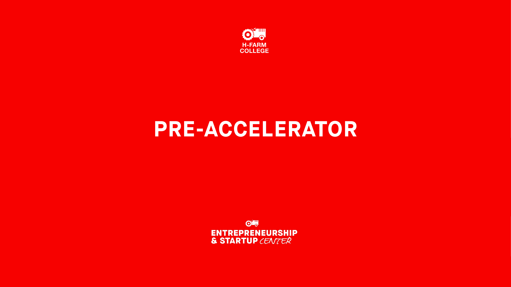
2025 · H-FARM Startup Center
H-FARM Pre-Accelerator
Fall Edition 2025 · 1 of 6 selected teams. The H-FARM Startup Center program where MARA became real — six weeks of mentorship, real pitching, and the cohort that made MARA shippable.
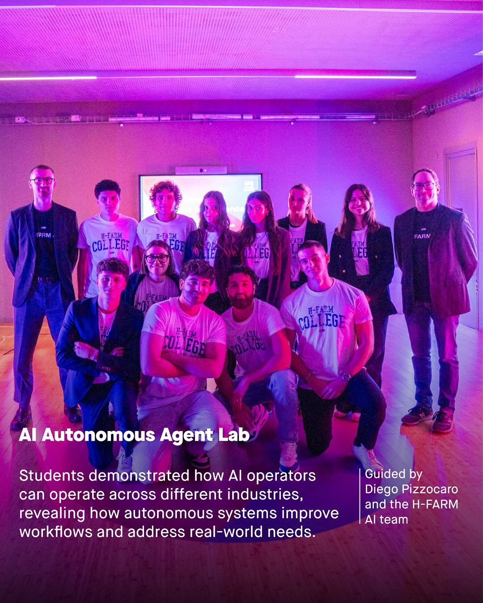
2025 · H-FARM AI
VOXI
A proactive AI virtual operator for logistics, built with the H-FARM AI team for the H-FARM Career Day 2025. Detects shipment anomalies, surfaces them to the customer before they need to ask.
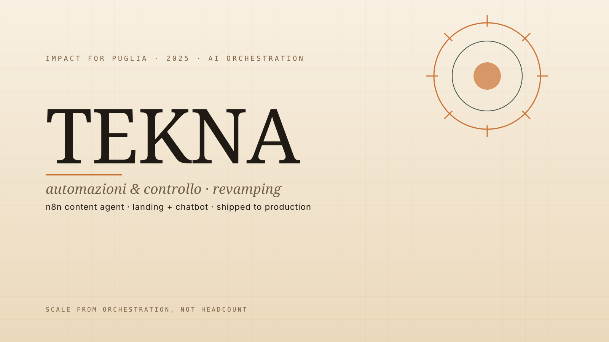
2025 · Impact for Puglia × TEKNA
TEKNA · Impact for Puglia
Two production AI integrations for an industrial automation client. An n8n agent that turns case studies and industry trends into automated content. A landing page + chatbot for their revamping vertical. Textbook 'orchestration not headcount'.
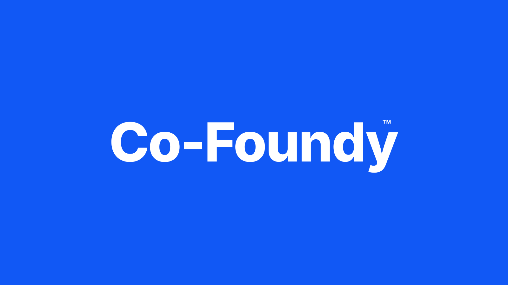
Pre-MARA · founder v1
Co-Foundy
A networking app matching students with ideas to students with technical skills. My first founder attempt — shipped, learned, pivoted toward what would become MARA.
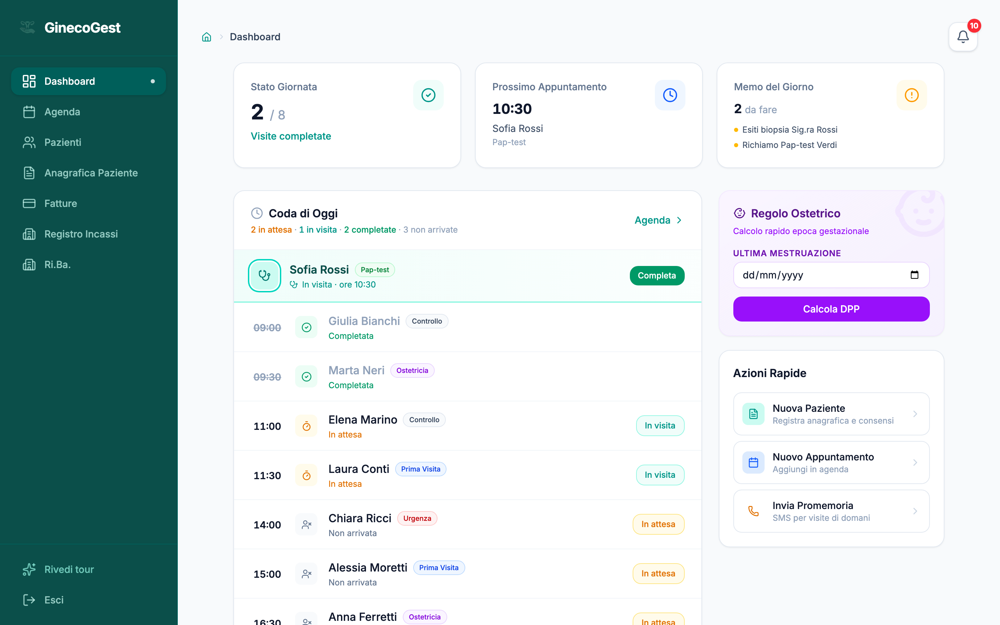
2025 · Solo build · 3 months
GinecoGest
The gynecology practice manager that puts the patient first, not the bureaucracy. Three experiences (doctor, secretary, patient), one app. Apple/Stripe-grade UX, GDPR-by-design.
Every project here started with a problem I couldn't stop thinking about.
If you're building in that spirit — especially if it's AI-native, education, or hiring — I'd love to hear from you.
MARA is a challenge-based hiring platform: students prove their skills on real company briefs instead of fighting the CV→ATS funnel. The CV had a good run — but in a world where AI is rewriting every job role and bots screen for bots, a list of past titles no longer tells you what someone can actually do. I'm the founder.
157 · H-ACK participants200+ · Students onboardedH-FARM Pre-Accelerator · CohortBeyond the CV · Press feature
CONTEXT · The origin
Four H-FARM College master's students — Michele Gualano, Alessandro Della Rocca, Rita Zhubi, and Alessandro Pio Alvigi — were two months into the program when the pattern became impossible to ignore. Even in a place built for entrepreneurship, the disconnect between students who could build and the companies who needed builders was a blocker. The pivot moment came at H-FARM's Career Day: students weren't handing out CVs, they were in open labs solving real company problems in real time. That was the cue. Already inside the H-FARM Startup Center Pre-Accelerator, we had the space, mentorship, and momentum to make it real.
TENSION · The problem — measurable and accelerating
The hiring funnel is breaking under its own weight, and the numbers are not opinions:
• US recent-grad unemployment hit 5.7% in Q4 2025 — a 3-year high — with 41.2% underemployed (NY Fed).
• 85% of the post-2023 rise in US unemployment is driven by new entrants (Oxford Economics).
• Italy is worse: only 69.6% of recent graduates are employed, the lowest in the EU (Eurostat); 15.2% NEET rate, second in Europe (ISTAT).
• LinkedIn now processes 11,000 applications/minute, +45% YoY (NYT).
• 83% of companies screen with AI; 49% auto-reject suspected AI résumés.
• A bad hire costs employers up to 30% of first-year salary (US DoL); 74% of employers admit to making one (CareerBuilder).
Bots writing for bots. MARA replaces guesswork with evidence — and the funnel is finally being rewritten.
APPROACH · How MARA works
A B2Education platform built on three actors. Students work on real company challenges and build a portfolio of proof, not promises. Companies find proven talent already observed under pressure. Universities activate their ecosystems and strengthen experiential learning. The flow is five steps: pre-challenge consulting, brief design, two-week sprint, jury evaluation, talent pipeline. The best solution wins, evaluated against predefined KPIs (Idea Originality, Team Dynamics, Solution Viability, Presentation Craft, Brief Coherence). All submitted work transfers as full IP to the company.
OUTCOME · First time live — H-ACK × Jakidale
MARA's first real test ran on H-ACK 'Robots in Action', the H-FARM hackathon co-organized with YouTuber Jakidale (March 2026). The platform didn't just hold — it ran the event end-to-end: 157 participants, 30 teams, 6 judges, all operating inside the MARA workspace to manage tasks, collaborate, and submit final work. Rita's team won the 'Robot Companion' brief and received the first Soulbound credential, MARA-2026-0043. For a platform that launched just days before, that's not a pilot — that's proof of concept.
OUTCOME · First real corporate challenge — The Lux Collective
Shortly after H-ACK, the first real corporate challenge landed on MARA: a 5-week brief from The Lux Collective (Mauritius HQ, 18 operating resorts + 16 in pipeline), the global hospitality group behind SOCIO, LUX*, SALT and Tamassa. H-FARM College ran the challenge, MARA powered the platform end-to-end (brief access, submissions, mentor sessions, jury voting). The winning team earned lunch with the CEO and CCO at World Travel Market London. Not a case study — a real brief, from a real company, with real stakes. Our team competed (Majilis Group); MARA hosted.
APPROACH · What is live
marachallenge.com — modern web stack: Next.js + Supabase + Claude / Claude Code / Gemini API for AI-assisted brief generation and evaluation + Polygon-anchored Soulbound credentialing. Frictionless for the participant, structured for the company, observable for the university.
OUTCOME · Featured & on the road
Featured by H-FARM College in April 2026 ('Beyond the CV: MARA, the platform born from the Challenges of H-FARM College'). Presented at FutureShots 2026, the H-FARM event dedicated to technology and its effects. Partnered as technology provider at Skill Boost Lab Edition (Campus X, Naples). Year-1 plan targets 18 challenges across three intakes.
"Bots writing for bots. MARA replaces guesswork with evidence."
GALLERY
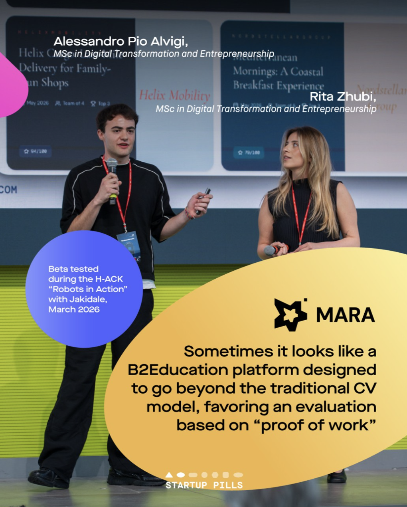
Startup Pills × MARA · 'Beta tested during the H-ACK Robots in Action with Jakidale, March 2026'
Co-founders: Michele Gualano · Alessandro Della Rocca · Rita Zhubi · Alessandro Pio Alvigi · marachallenge.com
2025 · H-FARM Startup Center
The program where MARA became real.
Young minds, big startup ideas. MARA wasn't selected for the H-FARM Startup Center Pre-Accelerator as a finished company — it was selected as one of six early-stage teams trusted to build. The Fall 2025 cohort gave us the space, the mentorship, and the time we couldn't have manufactured on our own.
H-FARM Startup Center runs the Pre-Accelerator twice a year for student teams ready to move from idea to early validation. Fall Edition 2025 selected six teams from H-FARM College — six ideas, six brief defenses, six weeks of focused work with mentors from the H-FARM ecosystem and the wider Italian VC scene.
APPROACH · Cohort 2025
The six selected: Eterna (funeral-provider comparison), MARA (challenge-based talent acquisition), weAltura (outdoor activities marketplace — final winner), ProFive (AI sales dashboard), FWDRI (dietary-restriction food app), Farmaterm (near-expiry pharmaceuticals marketplace), Retap (loyalty network for local businesses). Different verticals, same posture: ship something a real user would touch.
APPROACH · What we did inside the program
Iterated MARA from concept to a workable platform shape. Defined the three-actor model (students × companies × universities), the 5-step challenge flow, the scoring rubric. Validated against the H-FARM Career Day pattern we had already lived through. Built the first version of marachallenge.com inside this window.
OUTCOME · Where the cohort jury landed
Jury: Gabriele Conti Taguali (CEO & founder of Commercio Virtuoso), Luca De Zordo (Mechanical Engineer), Mauro Fantin (CTO at H-FARM H-ealth). Winner of the Fall Edition: weAltura. MARA didn't take the trophy that day — but went on to ship and run real events (H-ACK with Jakidale, the Lux Collective challenge) within the same six months.
LEARNINGS · What being inside the cohort taught
Two things became axioms for everything I shipped after. (1) The cohort is the asset — not the prize. Being in the room with five other teams trying to figure out the same questions in different domains compresses the learning curve more than any 1:1 mentorship. (2) Pitching is part of the work, not a separate stage. The teams that integrated feedback fast during the program were the ones that shipped after the program.
"The cohort is the asset, not the prize."
PDF · Pre-Accelerator Fall Edition 2025 · the 6 selected teams
Role · Selected team — MARA cofounderTeam · 4 (MARA team within the 6-team cohort)Duration · Fall 2025
H-FARM Startup Center · Fall Edition 2025 · cohort of 6
2025 · H-FARM AI
An AI operator that calls you before you call support.
Built inside H-FARM's AI Lab for the 2025 H-FARM Career Day. VOXI flips the customer-service contract: instead of a chatbot waiting for the customer to report a problem, it monitors the shipment lifecycle, detects anomalies, and proactively reaches the customer with what's happening and what's next.
H-FARM Career Day 2025 · EventH-FARM AI · Built withProactive ops · Pattern
CONTEXT · The brief
Logistics support is reactive. Customer notices late delivery → opens ticket → waits in queue → gets a status update they could have had earlier. The brief: invert that. Make the operator (AI or human) the one who initiates the conversation, with context already loaded.
APPROACH · How VOXI works
An event-driven layer over the carrier APIs. Anomalies (delay vs. ETA, package stuck in transit, exception codes) trigger a proactive outreach: an LLM-generated message tuned to the situation, sent through the right channel. The customer reads what happened and what to do next — without needing to ask.
APPROACH · Built with H-FARM AI
Developed in collaboration with the H-FARM AI team, on H-FARM's AI infrastructure. My role was on the operator-side experience: how does the agent introduce itself, what tone, what information density, when does it escalate to a human.
OUTCOME · Career Day 2025
Shown live at H-FARM Career Day to companies visiting the campus. Concrete demo of an AI-native customer ops pattern — not a vision deck, a working operator handling real-shaped requests.
"The best customer service question is the one the customer never has to ask."
Role · AI Operator Developer · Customer Experience sideTeam · H-FARM AI teamDuration · 2025
Built with the H-FARM AI team for H-FARM Career Day 2025.
2025 · Impact for Puglia × TEKNA
Production AI that earns its keep — for an industrial automation client.
Inside the Impact for Puglia program, I shipped two AI integrations for TEKNA, Automazioni & Controllo: a content automation agent built on n8n, and a customer-facing landing page + chatbot for the revamping vertical. Not a demo. Production output, in their pipeline.
TEKNA Automazioni & Controllo · ClientOrchestration · PatternImpact for Puglia · Program
CONTEXT · The client
TEKNA Automazioni & Controllo is an industrial automation company in Puglia. Two needs surfaced inside the Impact for Puglia engagement: (1) marketing content is expensive to produce manually but they have rich case-study material that goes unused, (2) the revamping vertical (modernizing existing industrial systems) was under-marketed on the website.
APPROACH · Process automation · n8n content agent
An n8n workflow that ingests TEKNA's case studies + industry trends, runs them through an LLM orchestration with the brand voice, and outputs ready-to-publish content drafts. No human in the loop for the first draft. Editorial review at the end, not at every step.
APPROACH · Digital strategy · landing + chatbot
A dedicated landing page for the revamping vertical, paired with an interactive chatbot. The chatbot qualifies inbound interest (sector, plant age, modernization scope) before the lead reaches the sales team — reducing the noise on the human side.
OUTCOME · Result
Both shipped inside the Impact for Puglia program engagement. Content automation reduced the marginal cost of one published asset to roughly the editorial review time. The chatbot-qualified leads arrived at sales already structured, which the team confirmed was faster than the previous freeform-form flow.
"The new question isn't 'can AI do this'. It's 'which boring expensive thing can I automate without breaking what was already working'."
Role · AI Consultant · Marketing & Process AutomationTeam · Solo · client-side TEKNADuration · 2025
Client: TEKNA, Automazioni & Controllo · Program: Impact for Puglia
Pre-MARA · founder v1
v1 of being a founder.
Before MARA there was Co-Foundy. Same energy, different angle: I'd noticed that students with ideas and students with technical skills lived two desks apart and never connected. So I built the matching layer.
Solo founder · RoleUser research · MethodShipped & learned · Outcome
CONTEXT · The pain point
User-research-led: direct interviews across the student community surfaced a recurring complaint — 'I have an idea but I can't find a technical co-founder' on one side, 'I can build but I don't know who needs me' on the other. The pain was real and dispersed.
APPROACH · What I built
A networking web app with structured profiles (idea owners vs. technical/operational profiles) and matching logic that took into account skills, time availability, and project stage. Motion design and brand work done in Jitter.video.
OUTCOME · What I learned
Two things that became foundational for MARA. (1) Matching is not enough — without a shared structured engagement (a challenge, a sprint, a stake), connections don't convert into work. (2) Universities are the right ecosystem layer; without them, distribution is one-by-one and growth doesn't compound. Co-Foundy is the prequel that taught me MARA's shape.
LEARNINGS · Why this is on the site
Not because it's a banger metric. Because it's the honest pre-history of MARA — and it's what makes the MARA bet credible. I shipped a founder attempt before I shipped the founder attempt that worked.
"Matching is not enough. You need a stake."
VIDEO · Brand scene · motion design (Jitter.video)
Role · Solo founder · Product · Design · MotionTeam · 1Duration · pre-2025
Solo. Tools: web stack + Jitter.video for motion design.
2025 · Solo build · 3 months
From blank page to a full gynecology practice manager in 3 months. Apple-grade UX, GDPR-by-design.
Italian gyno clinics juggle agenda, records, billing (Sistema TS), pregnancy tracking, and patient portal across 3–4 legacy tools that don't talk to each other. GinecoGest is the integrated alternative — one app, three role-tuned interfaces (doctor · secretary · patient), built from the first wireframe with GDPR as a starting axiom, not a retrofit.
Private gyno offices in Italy fall into two traps. (A) Heavy software, feature-rich but with 2009-era UI: dense screens, forced clinical jargon, nested menus. The doctor takes years to adapt; the secretary hates it. (B) Improvised tools: Google Calendar + Word invoices + paper anamnesis. Fast but fragile, untraceable, GDPR-incompatible. The middle is empty: a modern, clean tool that respects gyno specificities (pregnancies, obstetrics, yearly follow-ups) without sacrificing the experience.
APPROACH · Three users, three experiences in one app
The doctor wants full access — rich clinical records, fast patient switch, on-the-fly PDF reports, weekly pregnancy tracking. Works from desktop in the office and iPad in the visit room. The secretary lives in the calendar — books, reschedules, confirms, manages the waiting room, issues invoices. Does NOT have (and must not have) access to clinical records — role separation is also GDPR compliance. The patient is mobile-first: next appointment, last report download, next booking in 3 steps. Doesn't want to install an app from the store, doesn't want complex account creation.
APPROACH · Six design decisions
(1) One app, three interfaces — role detected at login, UI shapeshifts. Secretary never sees 'Invoices' nor 'Medical Record'. Conditional routing + lazy loading. (2) Mobile-first for the patient portal as a PWA (bottom tab bar, native gestures, iOS-style animations); desktop-first for the back office where you work 8h/day. (3) Privacy-by-design: no third-party trackers ever, clinical data lives locally (isolated localStorage per domain), Service Worker caches only static assets, role determines data visibility. (4) White space IS a feature — every row 16-20px padding, primary color (teal 600/700) used on max 5% of the visible area. References: Stripe Dashboard, Apple Mail, Linear. (5) Micro-interactions as quality signal — every state has a transition (hover, click, page change), 150-350ms with Apple's `[0.25, 0.1, 0.25, 1]` easing. (6) Cmd+K command palette (Linear/Vercel pattern) — search a patient, jump to a section, indispensable for the 8h/day user.
TENSION · The hard parts
Three challenges + solutions worth showing. (A) Three roles, three onboarding tours — data-driven tour system, one component, three datasets (SEGRETARIA_STEPS, MEDICO_STEPS, PAZIENTE_STEPS), localStorage flag per role, replay always available from sidebar. The last step always teaches Cmd+K, the productivity multiplier. (B) Rich medical record without becoming a maze — internal tabs (Anamnesis General · Gynecological · Pregnancy · Past Visits · Documents). The Pregnancy tab appears ONLY if the patient has an active obstetric record. Progressive disclosure. (C) Service Worker serving stale JS (classic PWA bug) — network-first for app code (JS/CSS/HTML), cache-first only for static assets (images, fonts). 'Reset cache' button in the ErrorBoundary for edge cases. SW de-registered automatically in dev mode.
OUTCOME · What's shipped
12 main screens, all responsive. 24 demo appointments distributed over 10 days with realistic statuses (completed / in waiting room / scheduled). 10 demo patients with complete clinical anamnesis, visit history, active pregnancies. Medical records with 5 navigable tabs. Client-side PDF report generation (no server calls). PWA installable on the patient portal. Three-role onboarding tour, replayable anytime. Command palette (Cmd+K) for fast navigation. Service Worker with correct cache versioning.
LEARNINGS · What I'd do differently
Honest reflections after development. (1) URL-based routing — today navigation is state-based (currentView as React state); a real router (TanStack Router or React Router) would give deep URLs, browser history, deep linking. Soon. (2) Real auth — today login is a demo role pick; production needs auth (probably Firebase Auth or Clerk) with OTP for the patient, strong password for doctor/secretary, MFA. (3) Hosted backend — local SQLite doesn't scale across clinics; Postgres on Supabase keeping the current schema. (4) Data model separated from UI — today store.tsx mixes too much; would extract types to a package and add Zod for runtime validation. (5) E2E tests with Playwright — the portfolio screenshot setup is the first step; same script converts to real E2E tests with assertions.
"Healthcare software for Italian clinics can be beautiful to use. The rules are simple: respect the user's time, reduce clicks on the frequent tasks, separate the roles, take GDPR seriously. The rest is execution."
GALLERY
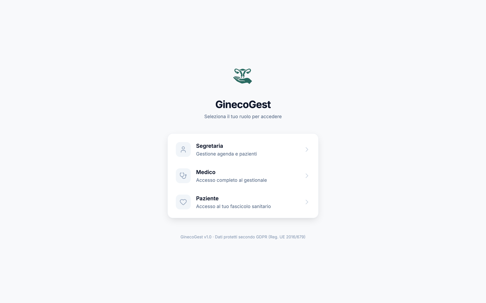
Login · role pick (medico / segretaria / paziente)Doctor dashboard
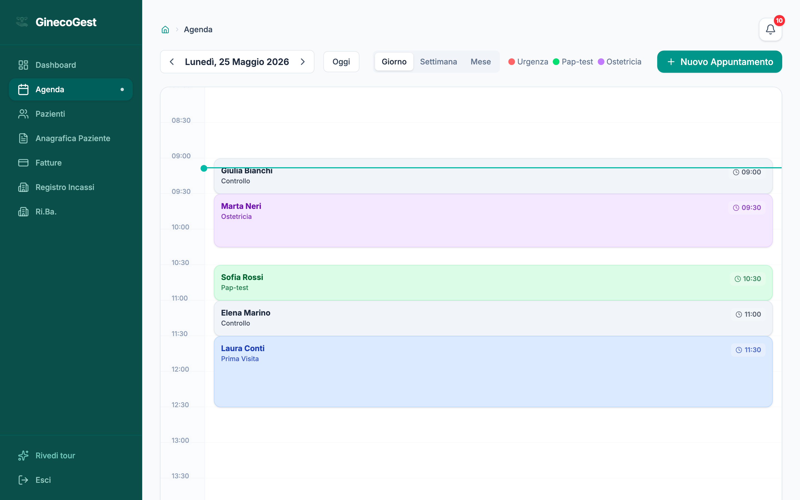
Agenda · weekly view, drag-to-reschedule, hover states for status
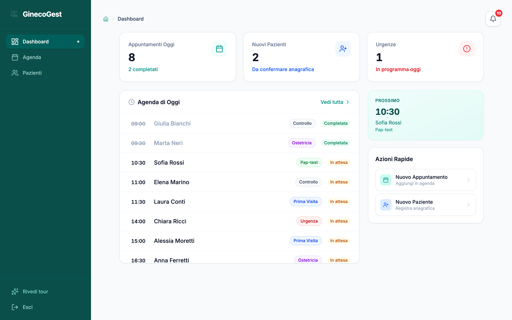
Waiting room · live status of who's in / who's next
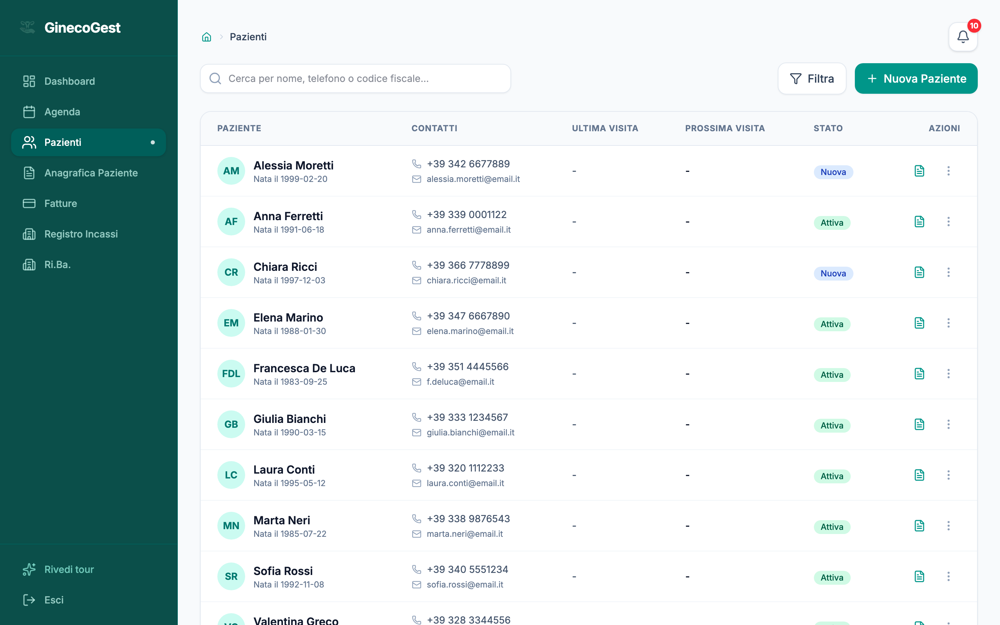
Patients · searchable list, all anamnesis flags at a glance
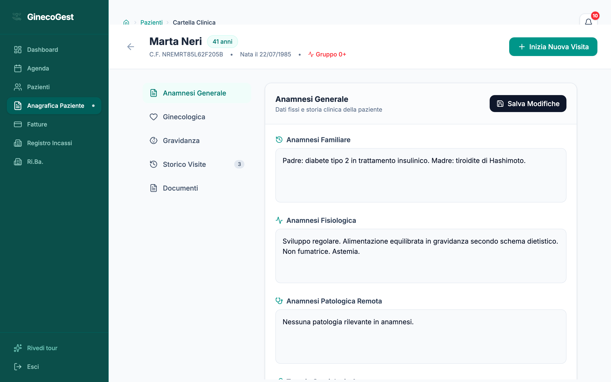
Medical record · Marta Neri (active pregnancy — Pregnancy tab visible)
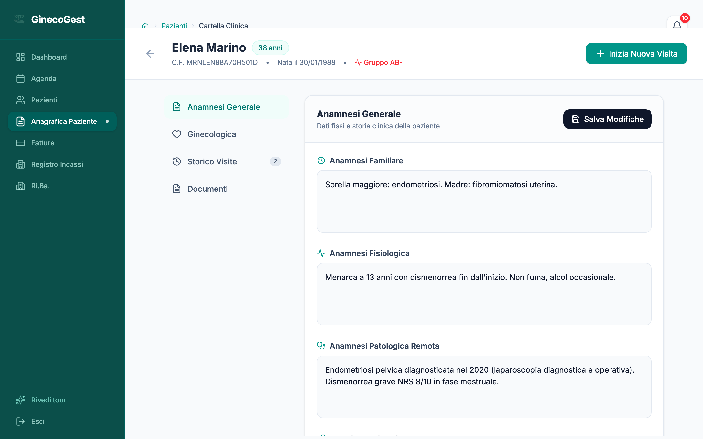
Medical record · Elena Marino (no active pregnancy — Pregnancy tab hidden, progressive disclosure)
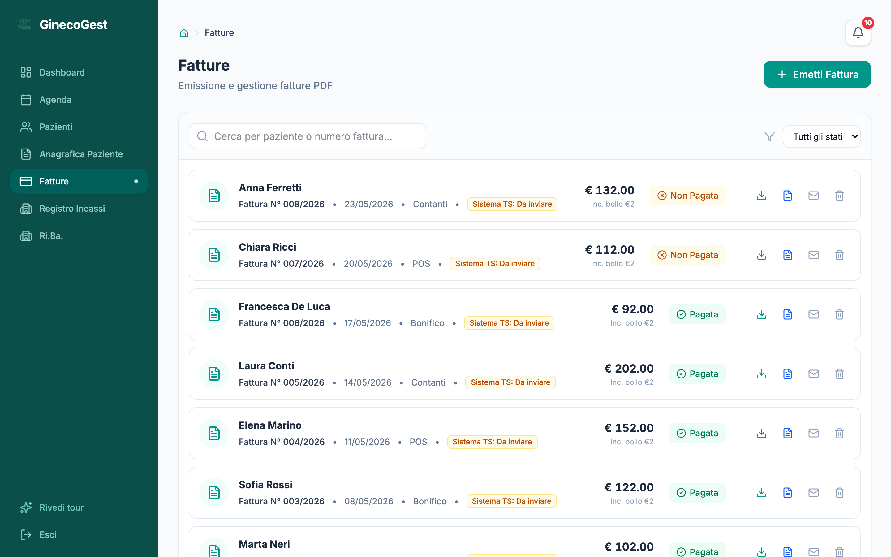
Invoices · Sistema TS-ready, Ri.Ba., quick filters
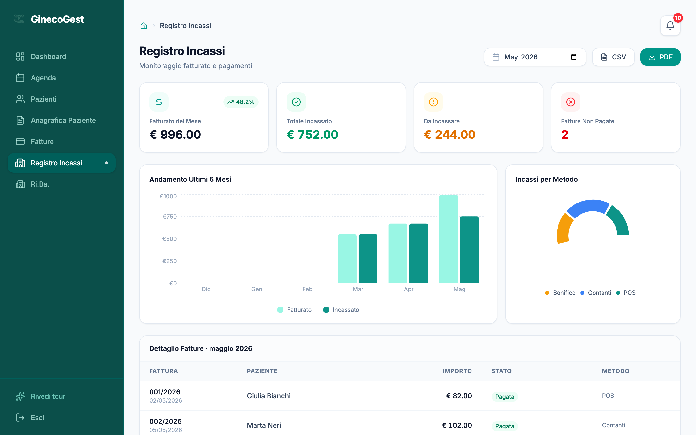
Revenue register · interactive Recharts plots, drill-down by period
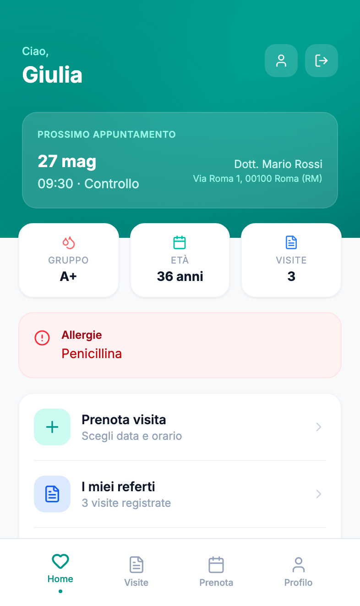
Patient portal home · PWA, mobile-first, bottom tab bar
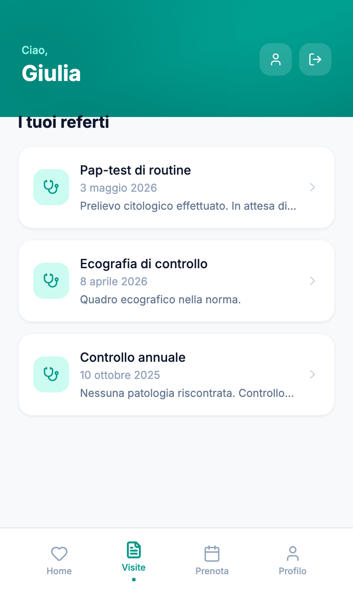
Patient portal · downloadable PDF reports
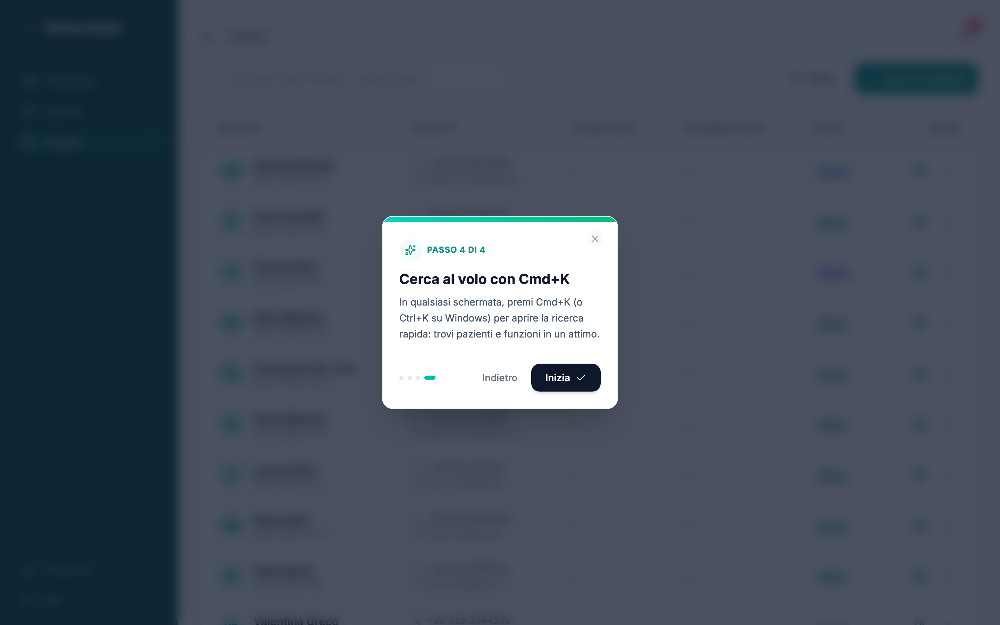
Onboarding tour · role-specific, spring-physics spotlight, ends teaching Cmd+K
Role · Solo · founder · designer · developerTeam · 1Duration · 3 months · 2025
Solo build · brief, architecture, design, implementation, screenshots: mine.